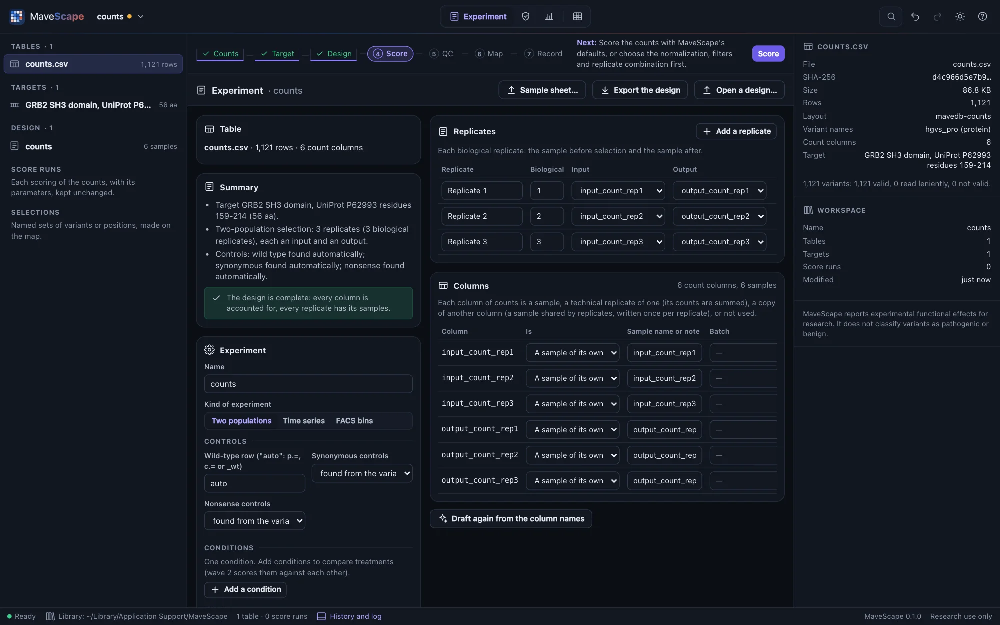
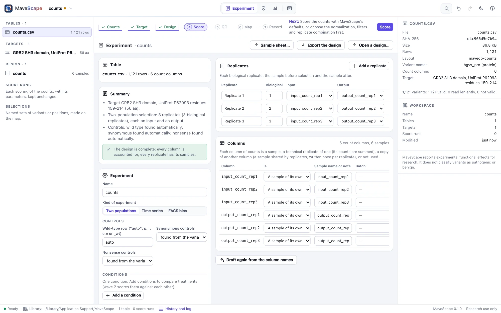
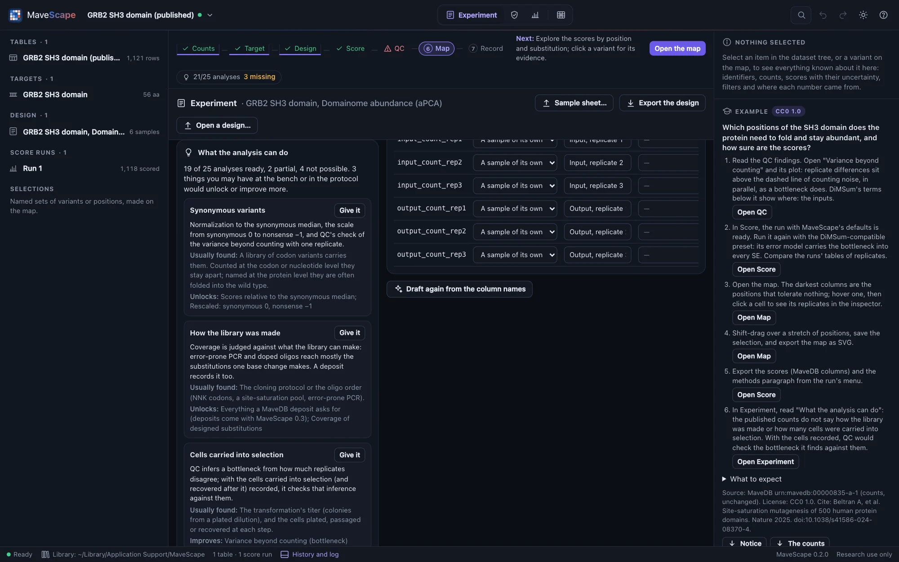
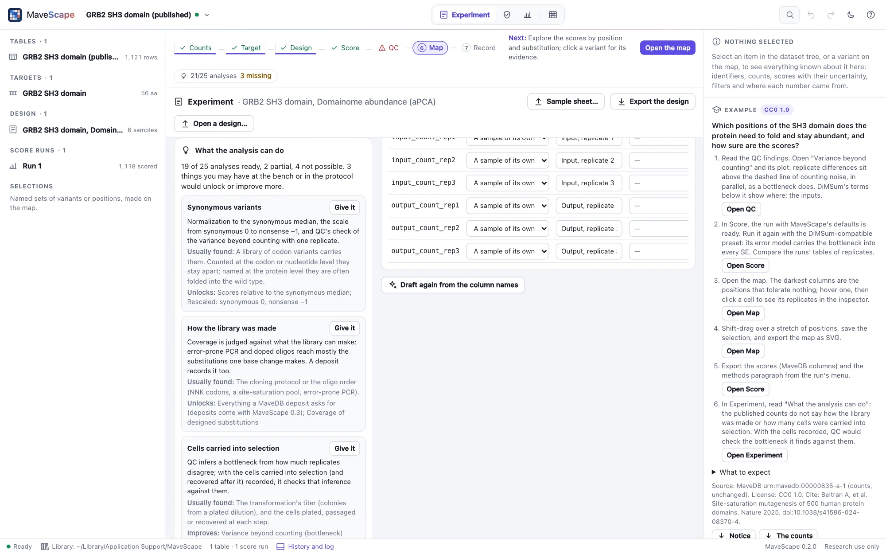
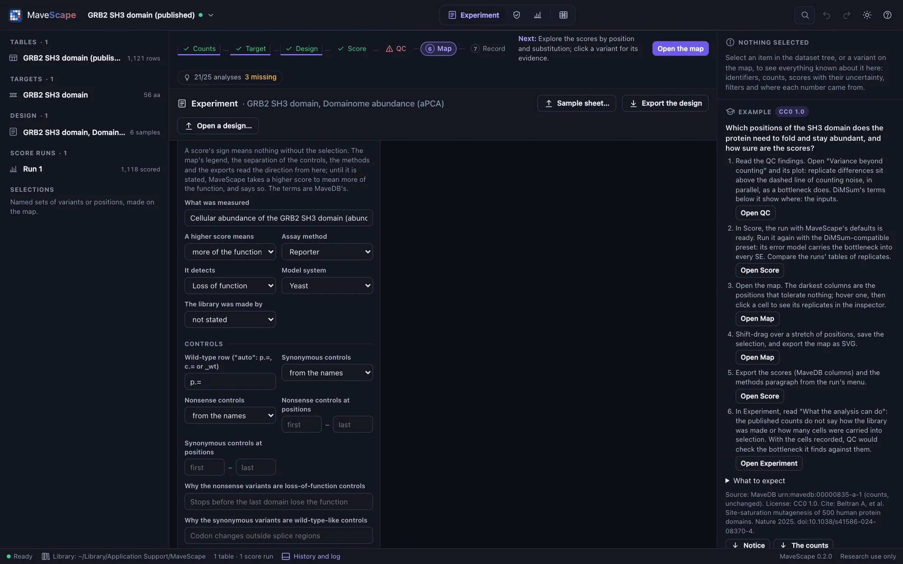
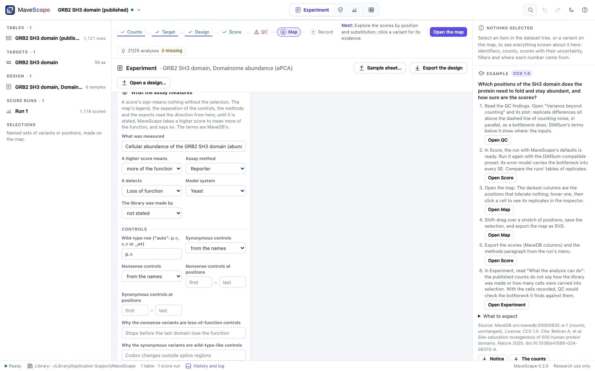
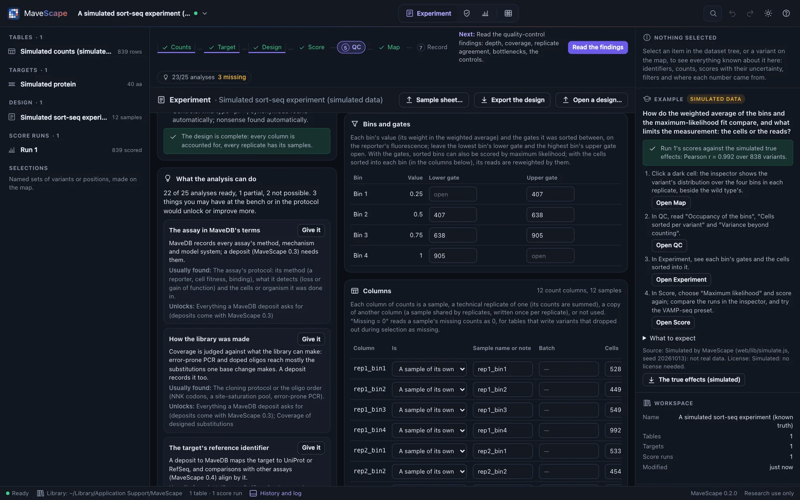
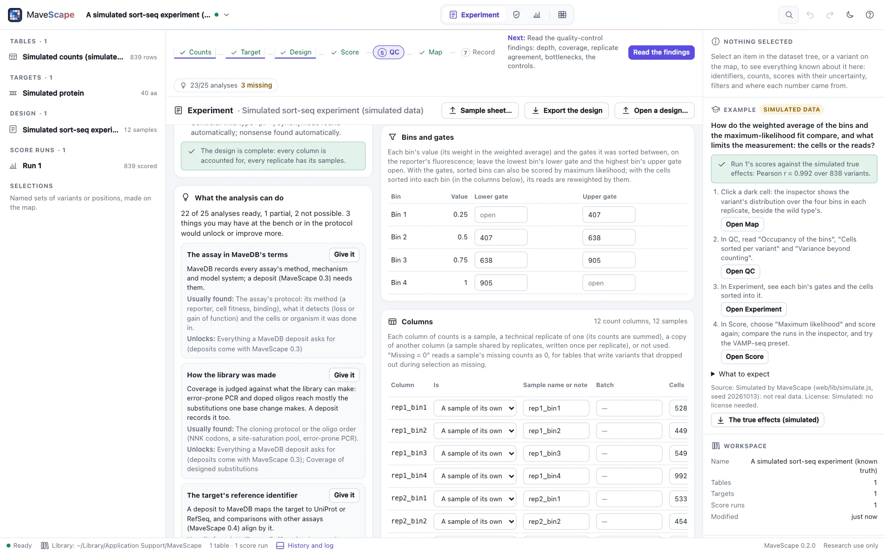
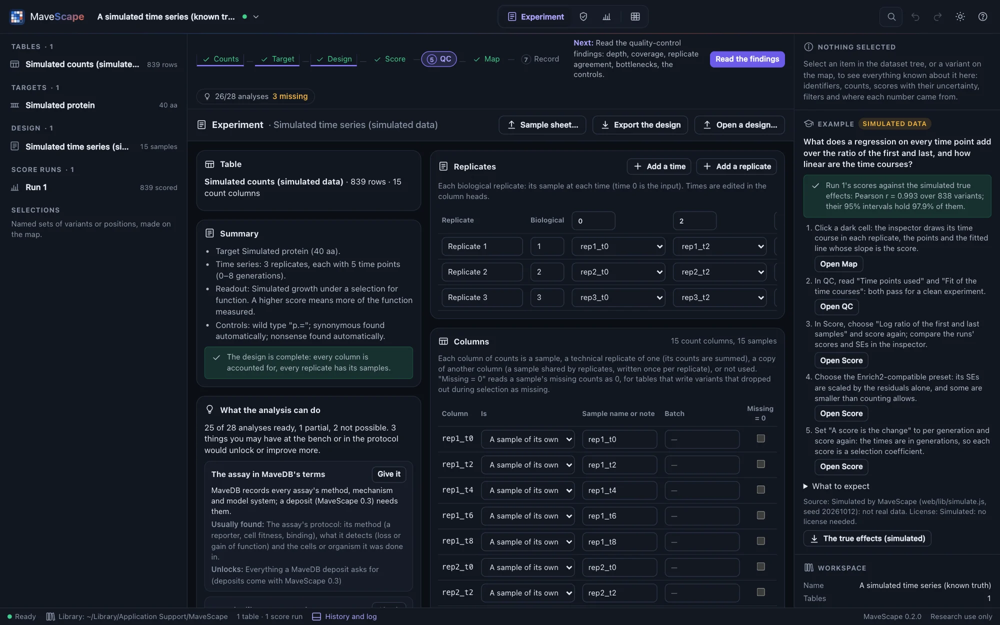
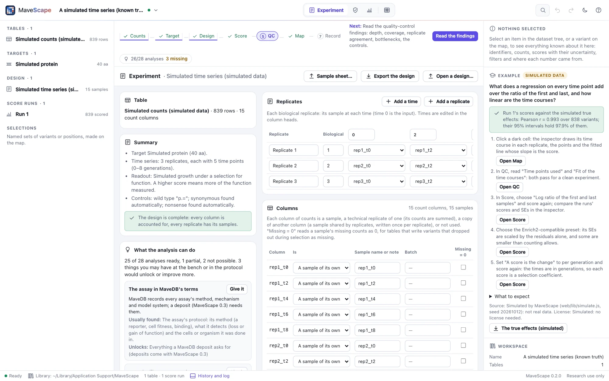

The design
The design says what each column of the count table is (which sample, its role, its replicate and time point) and what the assay measures. MaveScape drafts the columns from their names; you check them and say what the scores mean in the Experiment view.
Drafting the design
Once a table is open, the workflow strip offers Draft the design. MaveScape reads the column names (input, pre, lib; output, post, sel; rep1; t0, gen3; bin1; tile2), finds shared samples by comparing the columns' values, and sets aside every column it does not use, with the reason. The number of time points tells conditions apart: two assays in one table become two conditions.


The Experiment view
The design is two tables. Columns → samples: each column is a sample of its own, a technical replicate of another (summed), a copy of a shared sample's column, or not used, with why. Replicates × slots: each replicate's input and output, its time points (edited in the column heads) or its bins, with its condition and tile. With two or more conditions, one is the reference the others are compared with (Scoring); an input selected under several conditions is one sample named by each of their replicates. Beside them: the kind of experiment, the time unit, what the assay measures and its controls, and the target's name, offset, coding start and identifiers.
Every change is checked as you make it. The design is described in plain words, and each error and warning is listed: a column that is neither a sample's nor set aside is an error, so nothing is dropped silently.
What the analysis can do
The hardest part of an analysis is often gathering what the experiment was, not scoring it: which sample is which, what the assay selects for, and numbers kept at the bench that never reach the count table. What the analysis can do, in the Experiment view, goes through every analysis MaveScape offers for the design (each way of scoring, normalizing and rescaling, combining replicates, differential scores, each quality-control finding, the record) and says whether it is ready, partial (it runs, and something missing would make it more complete) or not possible, and why.
Below it, what is missing: each gap with why it matters, where it is usually found, and Give it, which takes you to where it goes in the view. Some are in the counts (the wild type's reads, synonymous or nonsense variants), some in the protocol (what the assay measures, how the library was made), some kept at the bench:
- the cells carried into selection (and recovered after it), on each input and output sample: quality control checks the bottleneck it infers from the replicates against them (Bottlenecks);
- the gates each bin was sorted between, and the cells sorted into each bin, for the maximum-likelihood fit (below);
- the times in generations, for scores per generation (Scoring);
- the target's UniProt or RefSeq identifier, and the assay in MaveDB's terms, which a deposit needs.
What would take another experiment (a second or third replicate, a second condition, more time points) is listed apart. Nothing is filled in by guessing: a gap stays visible until it is given, and the methods paragraph names what was not recorded and what that meant. The workflow strip shows how many analyses are possible and how many gaps the bench or the protocol could fill; the Start page lists what is worth bringing; mavescape validate prints the same account (Scripting).


The analysis package
Write the analysis package (here, or a run's export menu) writes one ZIP of what the analysis needs: the count table as imported, the target as FASTA, the design (with what the assay measures, the gates and the cells recorded), the design again as a sample sheet, the parameters (a run's, or MaveScape's defaults), the readiness as data, and a README with what each file is, the mavescape run command that scores it, and what is missing. These are the files mavescape run reads, and what the MAVE minimum information asks of an experiment, so the package that analyzes an experiment is the one that will deposit it (MaveScape 0.3). Scored from a run's package alone, mavescape run gives that run's output hash.
Kinds of experiment
| Kind | Samples per replicate | Scored |
|---|---|---|
| Two populations | An input and an output | Yes |
| Time series | Time points, with their times | By weighted regression on every time point (three or more), or by the log ratio of the first and last |
| Sorted bins | Bins, each with its value, and optionally its gates and the cells sorted | By the weighted average of the bins' values, or by maximum likelihood from the gates |
| Scores | Precomputed scores | Nothing to score; shown on the map in 0.3 |
What the assay measures
A score's sign means nothing without the selection. In a selection for function, a variant that becomes rarer has lost some of it, and scores low. But an assay can just as well enrich the variants that lose function: a toxic protein, a sort for a dim reporter. What the assay measures records which, in MaveDB's terms (the MAVE minimum information's vocabulary):
- What was measured, in words, and a higher score means: more of the function, less of it, or a larger change either way (a score with no sign).
- The assay method, what it detects (loss of function, gain of function…) and the model system.
- How the library was made. A library of single-base changes (error-prone PCR, doped oligos) reaches about a third of the substitutions, and with a DNA target quality control judges coverage against those (Quality control).
The direction is used wherever the scores' meaning matters. The map's legend reads "blue is less function, red more function" only when the direction is stated, and plain "lower" and "higher" otherwise. The separation of the controls expects loss of function on the stated side. The design's summary, the methods and the exports carry the readout. Until the direction is stated, MaveScape takes a higher score to mean more of the function, and says so rather than guessing quietly.


Controls that fit the assay
The wild type, synonymous and nonsense variants are found from their names, or listed, or set to none. Each class can be limited to the positions where it serves, with why it is a control. Nonsense variants are loss-of-function controls only where a stop loses the function assayed: in BRCA1's yeast two-hybrid assay, stops after the RING domain keep binding BARD1 and score like the wild type. Quality control finds such a position and suggests it. The limits apply to everything that uses the controls (normalization to synonymous variants, rescaling, the separation of the controls), and the reasons go into the design's summary and the methods.
Bins, gates and cells
For two populations, the Cells column records the cells carried into selection from each input (from the transformation's titer, or the cells plated) and, when known, those recovered after it in each output; quality control checks the bottleneck it infers from the replicates against them. For sorted bins, each bin's value (its weight in the weighted average: a rank or a fluorescence) is edited in the replicates table's heads. Bins and gates records the gates each bin was sorted between, on the reporter's fluorescence (the lowest bin's lower gate and the highest bin's upper gate open), and the Cells column the cells sorted into each bin. With the gates, the bins can be scored by maximum likelihood; with the cells, its reads are reweighted by them, and QC reads the cells per variant.


Missing = 0
Missing is not zero: an empty or NA count means the variant was not counted. But some pipelines write a variant that dropped out during selection, counted zero times, as missing. Quality control's "Missing after selection" finding notices when the missing variants are the ones that had been most depleted. Tick Missing = 0 for those samples after selection, never for a replicate's first sample (a variant missing there was not in the library), and score again: the run records the design, setting included.


Sample sheets
A sample sheet is a table with one row per sequenced sample: its column, role, replicate and, as needed, technical replicate, condition, time, bin, value and tile. Columns are recognized under many names, and DiMSum's experiment design file reads as a sample sheet. A sample shared by several replicates lists them (1;2;3), and one selected under several conditions lists those too (Without ligand;With ligand). The analysis package writes the design back as a sheet, one row per column of counts, which reads as the same design; the gates, the readout and the controls are the design file's alone.
column,role,replicate,technical_replicate,condition,time,bin,value,tile
input_rep1,input,1,1,,,,,
output_rep1,output,1,1,,,,,Design files and history
A design is saved and opened as *.design.json, described by a JSON schema in the repository; mavescape run reads the same file, readout included. Every material change to the workspace (an import, a target, the design) goes into its history, each entry chained to the one before by its hash, so that an entry edited afterward is caught. The drawer (⌘J) shows it.